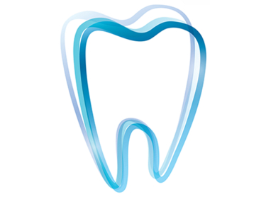

Достъпна цена и отлични резултати. Препоръчвам го на всички!

Достъпна цена и страхотни резултати, сега се усмихвам с увереност!

Изглеждат естествено и струват много по-малко, отколкото си мислех, много съм щастлива!

Удобни, лесни за почистване и изглеждат великолепно!

След като поставя подвижните фасети, се чувствам като нов човек.

Благодарение на подвижните фасети не мога да спра да се усмихвам.
В подвижни фасети намерих решение за усмивката си.
Подвижните фасети промениха живота ми, като направиха усмивката ми перфектна.
Достъпна цена
Незабавен ефект
Удобство
Лесни за поставяне

Поръчайте фасетитеи

Направете отливка

Поставете фасетите
Как да избера правилния размер фасети?
Предоставяме подробни инструкции и ви подкрепяме на всяка стъпка от пътя.
Колко дълго издържат фасетите?
При правилна грижа, фасетите могат да издържат много години.
Започнете сега и получете перфектните си фасети, доставени на личния ви адрес!
Стоматологията претърпя значителни промени през последните години и една от най-забележителните тенденции е нарастващата популярност на подвижните фасети, които могат да бъдат поставени у дома. Тези иновативни решения предлагат на потребителите удобство и икономия, предизвиквайки традиционните методи за корекция на зъбите.

Подвижните фасети са тънки, пластмасови или композитни подложки, които се поставят върху зъбите, за да подобрят външния им вид. Тези продукти помагат да скрият естетически недостатъци като потъмняване, неравности или пукнатини, и могат да бъдат поставени без да е необходимо да посещавате стоматологична клиника. С подвижните фасети потребителите могат да постигнат желаната усмивка без сложни процедури и високи разходи.
Един от основните фактори, допринасящи за популярността на сменяемите фасети, е тяхната цена. Традиционните фасети, които изискват професионално производство и поставяне, могат да струват няколко хиляди лева. В същото време, сменяемите фасети са значително по-евтини, което ги прави достъпни за широка аудитория.
Процесът по поставяне на подвижни фасети е оптимизиран за домашна употреба. Комплектът включва набор, който позволява на потребителя сам да създава прецизни форми на зъбите. Фасетите се правят в лаборатория, въз основа на милиони изследвани усмивки. Това елиминира необходимостта от сложни, стоматологични процедури и посещения.
Подвижните фасети предлагат на потребителите гъвкавост. Те могат лесно да бъдат поставени и премахнати по желание, което ви позволява да промените външния си вид в зависимост от ситуацията или настроението си. Това ги прави и удобен вариант за тези, които търсят временно решение, или искат да изпитат нов стил усмивка, преди да вземат по-трайно решение.
Процесът на получаване и поставяне на подвижните фасети включва няколко стъпки:
Зъболекарите имат различни мнения за този нов продукт. Някои смятат, че подвижните фасети могат да бъдат полезен инструмент за временно подобряване на външния вид на зъбите. Други експерти, обаче, предупреждават за възможни рискове, като непълното прилягане на фасетите или възможното им въздействие върху здравето на зъбите и венците.
Д-р Бренда Хофман, зъболекар със седалище в Лондон, отбелязва:
Подвижните фасети осигуряват удобно и достъпно решение за тези, които търсят бързи резултати. Важно е обаче да се има предвид, че дългосрочната употреба на такива фасети може да изисква редовно наблюдение и поддръжка.
Подвижните фасети, които могат да бъдат поставени у дома, представляват значителна стъпка напред в областта на козметичната стоматология, предлагайки удобно и достъпно решение за тези, които искат да подобрят усмивката си без високи разходи и продължителни процедури. Потребителите обаче трябва да бъдат внимателни и да обмислят възможните рискове, свързани с употребата им.
Започнете сега и получете перфектните си фасети, доставени на личния ви адрес!